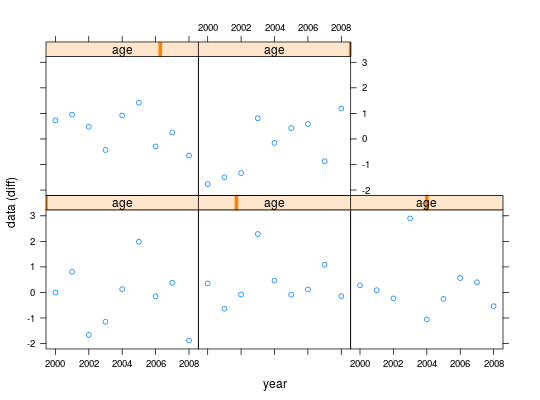

The FLQuant class is a six-dimensional array
designed to store most quantitative data used in fisheries and population
modelling.
FLQuant(object, ...) # S4 method for missing FLQuant(object, dim = rep(1, 6), dimnames = "missing", quant = NULL, units = "NA", iter = 1) # S4 method for vector FLQuant(object, dim = rep(1, 6), dimnames = "missing", quant = NULL, units = "NA", iter = 1, fill.iter = TRUE) # S4 method for array FLQuant(object, dim = rep(1, 6), dimnames = "missing", quant = NULL, units = "NA", iter = 1, fill.iter = TRUE) # S4 method for matrix FLQuant(object, dim = "missing", dimnames = "missing", ...) # S4 method for FLQuant FLQuant(object, quant = attributes(object)[["quant"]], units = attributes(object)[["units"]], dimnames = attributes(object)[["dimnames"]], iter = dim(object)[6], fill.iter = TRUE, dim = attributes(object)[["dim"]])
The six dimensions are named. The name of the first dimension can be
altered by the user from its default, quant. This could typically be
age or length for data related to natural populations. The
only name not accepted is 'cohort', as data structured along cohort should
be stored using the FLCohort class instead. Other dimensions
are always names as follows: year, for the calendar year of the
datapoint; unit, for any kind of division of the population, e.g. by
sex; season, for any temporal strata shorter than year; area,
for any kind of spatial stratification; and iter, for replicates
obtained through bootstrap, simulation or Bayesian analysis.
In addition, FLQuant objects contain a units attribute, of
class character, intended to contain the units of
measurement relevant to the data.
numericThe FLQuant method provides a flexible constructor for objects of the class.
Inputs can be of class:
vector:matrix:FLQuant (NA) is returned, but dimensions and dimnames can still be specified.Additional arguments to the constructor:
character string.numeric vector of length 6.list object providing the dimnames of the array. Only those different from the default ones need to be specified.character string.FLQuant
# creating a new FLQuant flq <- FLQuant() flq <- FLQuant(1:10, dim=c(2,5)) summary(flq)#> An object of class "FLQuant" with: #> dim : 2 5 1 1 1 1 #> quant: quant #> units: NA #> #> Min : 1 #> 1st Qu.: 3.25 #> Mean : 5.5 #> Median : 5.5 #> 3rd Qu.: 7.75 #> Max : 10 #> NAs : 0 %# Vectors are used column first... dim(FLQuant(1:10))#> [1] 1 10 1 1 1 1# ...while matrices go row first. dim(FLQuant(matrix(1:10)))#> [1] 10 1 1 1 1 1FLQuant(matrix(rnorm(100), ncol=20))#> An object of class "FLQuant" #> , , unit = unique, season = all, area = unique #> #> year #> quant 1 2 3 4 5 6 #> 1 -0.09759913 0.03385795 -0.34697735 0.07546089 0.00022515 0.41279583 #> 2 -1.34077176 -0.10124021 -0.40206005 -1.01172412 0.70737719 0.89783748 #> 3 -0.65968621 -0.17492788 -0.87673003 -1.84725883 -0.35324956 0.11997326 #> 4 -0.77464869 0.09793209 0.64986191 1.20733404 1.56941408 0.18144384 #> 5 -0.81763367 0.96478402 -0.27614698 -0.64430835 -0.05793168 -1.53252693 #> year #> quant 7 8 9 10 11 12 #> 1 -1.17305884 0.02343790 -1.51420855 -1.94021080 0.28379146 1.24843870 #> 2 -0.82370233 0.98962205 1.53697087 0.42362898 0.37337917 -0.57210924 #> 3 0.31957268 -0.14387529 -1.44070376 -0.60929599 0.81612460 0.12532604 #> 4 -1.25481646 -0.04808570 0.80601268 2.54580273 -1.33797275 -0.04864494 #> 5 0.44097360 0.80776815 -0.50777011 -0.35288909 1.26575394 1.18643611 #> year #> quant 13 14 15 16 17 18 #> 1 0.36940320 -2.09196167 0.85668320 -0.46295569 -0.47572218 0.80701112 #> 2 -0.21414982 1.04769919 -0.42253445 1.66358440 -0.00704921 0.36574108 #> 3 -0.26829917 -1.47275512 -0.15219072 0.49326963 -0.34229241 -1.43304667 #> 4 -0.71380138 0.46051308 -0.92231246 0.08994991 -0.42039371 0.60090140 #> 5 -0.68456441 -0.38747189 -0.36732726 -0.81485449 1.64897034 3.24787056 #> year #> quant 19 20 #> 1 0.55156101 -2.53281805 #> 2 -1.64090284 0.01762553 #> 3 2.33558807 1.23371490 #> 4 -0.73127905 0.88657488 #> 5 1.36629957 2.83374243 #> #> units: NAFLQuant(array(rnorm(100), dim=c(5,2,1,1,1,10)))#> An object of class "FLQuant" #> iters: 10 #> #> , , unit = unique, season = all, area = unique #> #> year #> quant 1 2 #> 1 -0.039355(0.629) 0.194100(0.722) #> 2 -0.428783(1.082) 0.101764(1.231) #> 3 -0.085489(0.716) -0.591867(0.996) #> 4 0.310887(0.313) -0.210617(1.374) #> 5 -0.102796(1.117) 0.053326(0.787) #> #> units: NAFLQuant(array(rnorm(100), dim=c(5,2)), iter=10)#> An object of class "FLQuant" #> iters: 10 #> #> , , unit = unique, season = all, area = unique #> #> year #> quant 1 2 #> 1 2.21724(0) 0.49877(0) #> 2 -0.88905(0) -0.27022(0) #> 3 0.63178(0) 0.56386(0) #> 4 0.14597(0) -1.24337(0) #> 5 -0.19392(0) -0.92556(0) #> #> units: NA# working with FLQuant objects flq <- FLQuant(rnorm(200), dimnames=list(age=1:5, year=2000:2008), units='diff') summary(flq)#> An object of class "FLQuant" with: #> dim : 5 9 1 1 1 1 #> quant: age #> units: diff #> #> Min : -1.878808 #> 1st Qu.: -0.5374196 #> Mean : 0.08551339 #> Median : 0.1154739 #> 3rd Qu.: 0.5852024 #> Max : 2.897842 #> NAs : 0 %flq[1,]#> An object of class "FLQuant" #> , , unit = unique, season = all, area = unique #> #> year #> age 2000 2001 2002 2003 2004 2005 2006 2007 #> 1 -0.89735 0.80777 -1.66396 -1.14947 0.13043 1.98825 -0.15134 0.37558 #> year #> age 2008 #> 1 -1.87881 #> #> units: diffflq[,1]#> An object of class "FLQuant" #> , , unit = unique, season = all, area = unique #> #> year #> age 2000 #> 1 -0.89735 #> 2 0.35406 #> 3 0.27970 #> 4 0.72876 #> 5 -1.76617 #> #> units: diff#> [1] "diff"quant(flq)#> [1] "age"plot(flq)FLQuant()#> An object of class "FLQuant" #> , , unit = unique, season = all, area = unique #> #> year #> quant 1 #> all NA #> #> units: NAsummary(FLQuant())#> An object of class "FLQuant" with: #> dim : 1 1 1 1 1 1 #> quant: quant #> units: NA #> #> Min : NA #> 1st Qu.: NA #> Mean : NA #> Median : NA #> 3rd Qu.: NA #> Max : NA #> NAs : 100 %FLQuant(1:10)#> An object of class "FLQuant" #> , , unit = unique, season = all, area = unique #> #> year #> quant 1 2 3 4 5 6 7 8 9 10 #> all 1 2 3 4 5 6 7 8 9 10 #> #> units: NAFLQuant(array(rnorm(9), dim=c(3,3,3)))#> An object of class "FLQuant" #> , , unit = 1, season = all, area = unique #> #> year #> quant 1 2 3 #> 1 0.20778 2.79912 1.20468 #> 2 0.41199 2.03572 -1.24331 #> 3 0.76601 -1.58763 -0.56330 #> #> , , unit = 2, season = all, area = unique #> #> year #> quant 1 2 3 #> 1 0.20778 2.79912 1.20468 #> 2 0.41199 2.03572 -1.24331 #> 3 0.76601 -1.58763 -0.56330 #> #> , , unit = 3, season = all, area = unique #> #> year #> quant 1 2 3 #> 1 0.20778 2.79912 1.20468 #> 2 0.41199 2.03572 -1.24331 #> 3 0.76601 -1.58763 -0.56330 #> #> units: NAFLQuant(matrix(rnorm(12), nrow=3, ncol=3))#> An object of class "FLQuant" #> , , unit = unique, season = all, area = unique #> #> year #> quant 1 2 3 #> 1 1.42237 -0.20667 0.87701 #> 2 -1.08799 -0.84428 -0.57689 #> 3 -0.72995 -1.56370 2.23512 #> #> units: NAFLQuant(FLQuant(array(rnorm(9), dim=c(3,3,3)), units='kg'), units='t')#> An object of class "FLQuant" #> , , unit = 1, season = all, area = unique #> #> year #> quant 1 2 3 #> 1 -0.47414 1.80797 0.51680 #> 2 1.19356 -0.33682 3.14759 #> 3 0.38314 -1.14515 0.37924 #> #> , , unit = 2, season = all, area = unique #> #> year #> quant 1 2 3 #> 1 -0.47414 1.80797 0.51680 #> 2 1.19356 -0.33682 3.14759 #> 3 0.38314 -1.14515 0.37924 #> #> , , unit = 3, season = all, area = unique #> #> year #> quant 1 2 3 #> 1 -0.47414 1.80797 0.51680 #> 2 1.19356 -0.33682 3.14759 #> 3 0.38314 -1.14515 0.37924 #> #> units: t